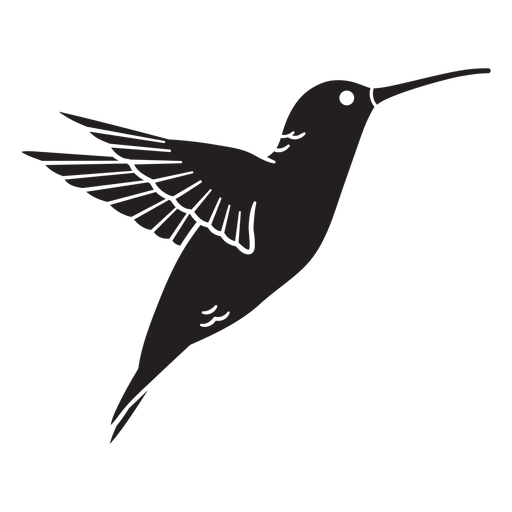
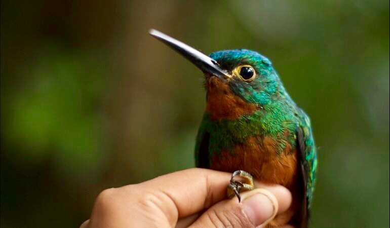
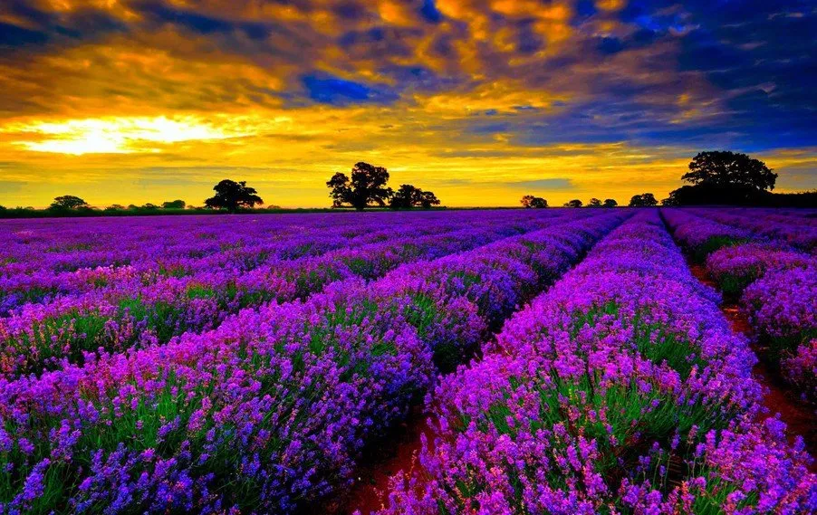

|  |
Colombia es un país supremamente hermoso y uno de los más biodeiversos del mundo, contando con aproximadamente unas 50.000 especies registradas y cerca de 31 millones de hectareas protegidas lo cual equivale aproximadamente al 15% de todo el territorio nacional, Ademas de ser catalogado como el segundo país más diverso del mundo. Debido a tal magnitud de biodeiversidad, la inspiración del sitio web es hacer llegar al mayor número de personas posibles un poco de la genialidad que esconde nuestro país. |
| Animales | |
|  | Colombia al ser un pais del tropico ubicado en la zona del ecuador tiene una gran representación de grupos taxonomicos en fauna tipica del área, a lo que se suman variedades de migraciones de fauna desde distintas partes del planeta devido a la cantidad tan variada de ecositemas que yacen en el país, para conocer más haz clic |
| Flora | |
|  | La biodiversidad en Colombia es uno de los tesoros más valiosos del país, y la diversidad de la flora es un componente clave de esta riqueza. Con una variedad geográfica que va desde los páramos fríos hasta los bosques tropicales húmedos, la flora colombiana es un ecosistema vibrante y diverso. Para conocer más haz clic |